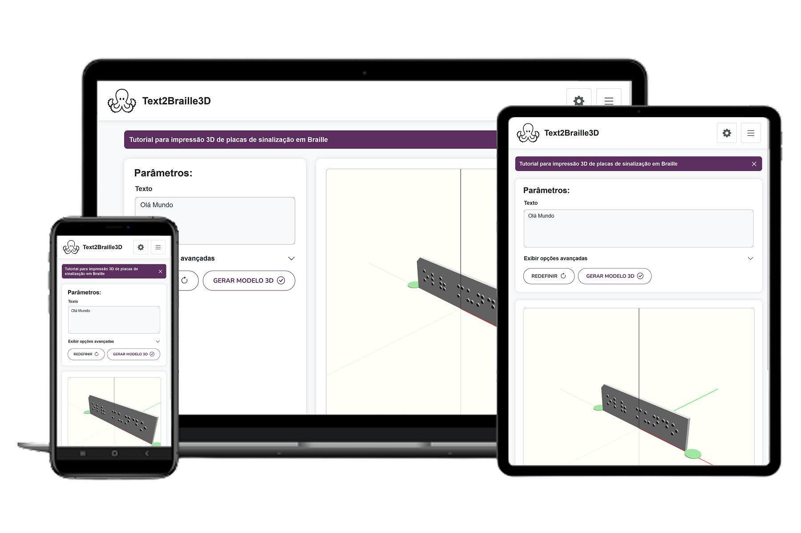
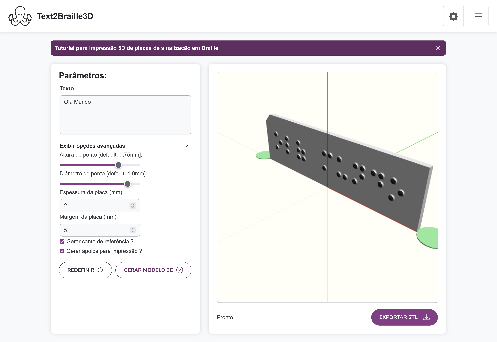
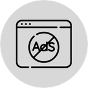
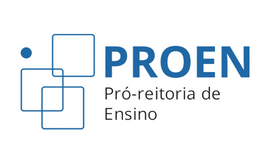

Texto para placa Braille
A ferramenta Text2Braille3D permite gerar modelos 3D de placas de sinalização em Braille prontas para serem impressas em impressora 3D.

A ferramenta Text2Braille3D permite gerar modelos 3D de placas de sinalização em Braille prontas para serem impressas em impressora 3D.

Conversor de texto para modelos 3D de placa de sinalização em Braille
Digite o texto que deseja transformar em uma placa de sinalização. A ferramenta converte os caracteres em células Braille e apresenta o modelo em um visualizador 3D diretamente no navegador.
Ajuste as configurações da placa, como espessura, espaçamento entre os pontos e as linhas e opções de fixação. A visualização ajuda a conferir o resultado antes de exportar o arquivo.
Exporte o modelo em STL para prepará-lo no programa de fatiamento da sua impressora 3D. Consulte os manuais para conhecer o fluxo de uso e as orientações de impressão.


Consulte o tutorial para impressão 3D de placas de sinalização em Braille e conheça as orientações para preparar seus modelos.
Seu feedback é muito importante. Envie um e-mail para nós contando sua experiência para identificarmos o que podemos melhorar, assim como, os pontos positivos.
O projeto desse App está hospedado no GitHub para que você, desenvolvedor ou empresa, contribua com melhorias ou correções caso encontrem algum bug.
Para conhecer mais sobre os trabalhos e projetos desenvolvidos pelo CTA acesse nosso site ou redes sociais disponíveis na lista abaixo.
